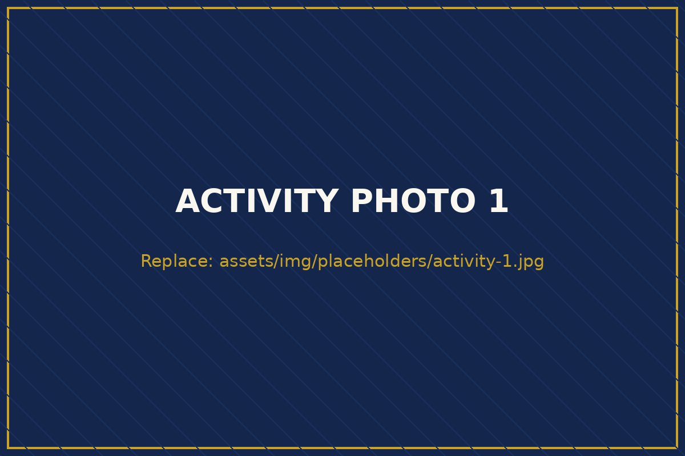
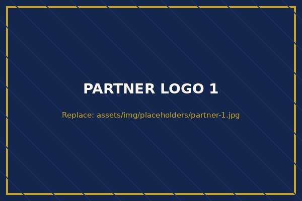
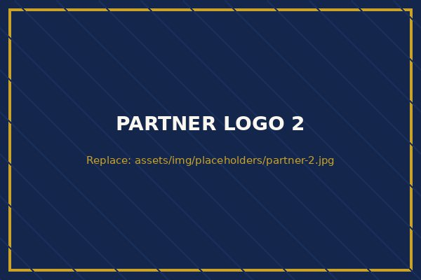
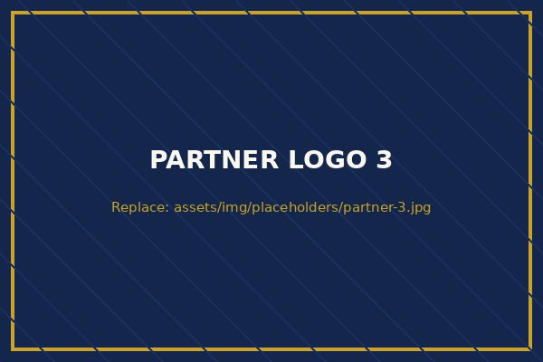
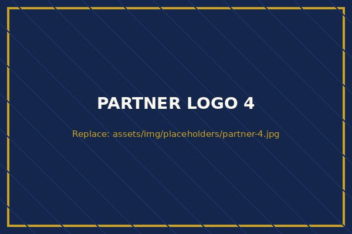

African Institute for Research Advancement & Innovation
AIRA Africa is a non-profit research institute headquartered in Kano, Nigeria — building the capacity of students, early-career researchers, and professionals to solve Africa's health, agricultural, technological, and societal challenges.
Who We Are
The African Institute for Research Advancement & Innovation (AIRA Africa) is a registered non-profit organization engaged in research development, mentorship, and innovation. We design and implement research training programs, workshops, and collaborative projects — and we organize conferences and seminars that connect African researchers to the world.
Core Areas of Focus
AIRA Africa operates across multiple research domains to promote interdisciplinary research advancement and innovation.
Clinical research, public health, medical imaging, biomedical sciences, and healthcare innovation.
→ 02Agricultural innovation, food security, climate-smart agriculture, agribusiness, and rural development.
→ 03AI applications, digital innovation, data analytics, machine learning, and technology-driven research.
→ 04Engineering, applied sciences, environmental research, and emerging technologies.
→ 05Education research, development studies, governance, public policy, and community-based research.
→
What We Do
From structured research mentorship and fellowships to capacity-building workshops, academic bootcamps, conferences, and collaborative innovation projects — our programs meet researchers where they are, online first and on-site as we grow.
Leadership
AIRA Africa is led by practicing researchers and professionals — people who live the work the Institute exists to advance.

MRI specialist radiographer, educator, and researcher with over nine years across clinical radiography, MRI, ultrasound, and CT — currently pursuing a PhD in Medical Radiography at Bayero University Kano.

Agricultural entrepreneur, researcher, and mentor — CEO of Real Agro and Integrated Services, PhD from Ahmadu Bello University, Zaria, and an active farmer and agribusiness innovator.

Responsible for corporate governance, statutory records, and regulatory compliance, and for supporting the Board in the orderly administration of the Institute's affairs.
"We exist so that the next generation of African researchers never has to choose between staying home and doing world-class research."
From the founding objectives of AIRA Africa
In Collaboration With




Universities, research institutions, government agencies, funders, and volunteers — there is a place for you in this mission.